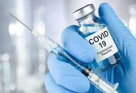
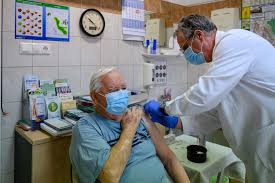

A vakcina elősegíti, hogy az immunrendszer (a szervezet természetes védelme) antitesteket és a vírus ellen ható vérsejteket termeljen, így nyújtson védelmet a COVID 19 ellen.
A koronavírus elleni védettség kialakulásához általában két oltásra van szükség, vakcinát 21 illetve 28 napos különbséggel szükséges beadni. A 2. dózis néhány napos (1-4 nap) türelmi időn belüli beadása érvényesnek tekinthető. Ha az első adag beadása óta több mint 21/28 nap telt el, a második oltást a lehető leghamarabb kell beadni (de nem kell megismételni az adagokat). Az oltottak védelme csak a vakcina második adagját követően alakul ki, várhatóan 1-2 héten belül. Az oltóanyagokat nem lehet felcserélni, az első és a második oltást ugyanazon oltóanyaggal kell elvégezni. Mint minden vakcinánál, a COVID-19 megbetegedés ellen végzett vakcináció esetében is előfordulhat, hogy az nem véd meg minden beoltott személyt.
Az oltás krónikus betegséggel rendelkező személyeknek adható, akiknél nem áll fenn az oltásra vonatkozó kontraindikáció.
A védőoltás beadása után oltási reakciók fordulhatnak elő. Ezek közül a leggyakoribbak: fájdalom a beadás helyén, fejfájás, hidegrázás, fáradtság, izomfájdalom, láz, injekció beadási helyén jelentkező duzzanat. Nagyon ritkán előfordulhat: megnagyobbodott nyirokcsomók (hónalji nyirokcsomó duzzanata, érzékenysége), rossz közérzet, végtagfájdalom, álmatlanság, viszketés az injekció beadási helyén. Ezek általában enyhék vagy közepesen súlyosak és a vakcina beadása után pár napon belül elmúlnak.
A vakcina beadásával összefüggésben szorongással kapcsolatos reakciók, köztük ájulás, hiperventilláció vagy stresszel kapcsolatos reakciók fordulhatnak elő a tűszúrásra adott pszichogén válaszként. Fontos óvintézkedéseket alkalmazni az ájulás miatti sérülések elkerülése érdekében.
Jelenleg nem állnak rendelkezésre adatok a COVID-19 elleni oltóanyagok felcserélhetőségre vonatkozóan. Az oltási sorozatot, ugyanazon vakcinával kell befejezni. A COVID-19 vakcinák más fertőzés/betegség elleni oltóanyaggal történő egyidejű alkalmazására nem állnak rendelkezésre adatok. Emiatt más vakcinával egyidejűleg nem adható be, legalább 2 hetes időközzel adható be bármely más védőoltás. Ha bármelyik COVID-19 ellenivakcinát véletlenül beadják egy másik oltást követő 4 héten belül, akkor az oltásokat nem kell megismételni egyik vakcina esetében sem.